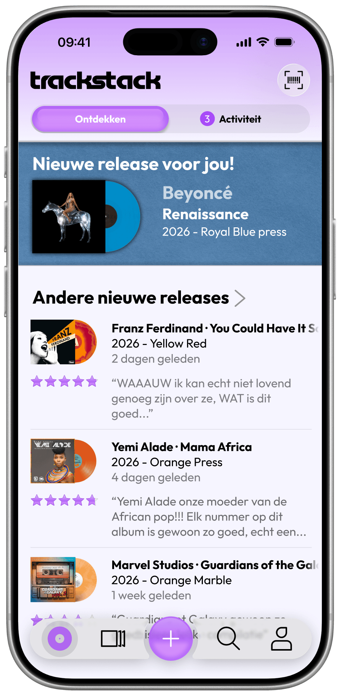
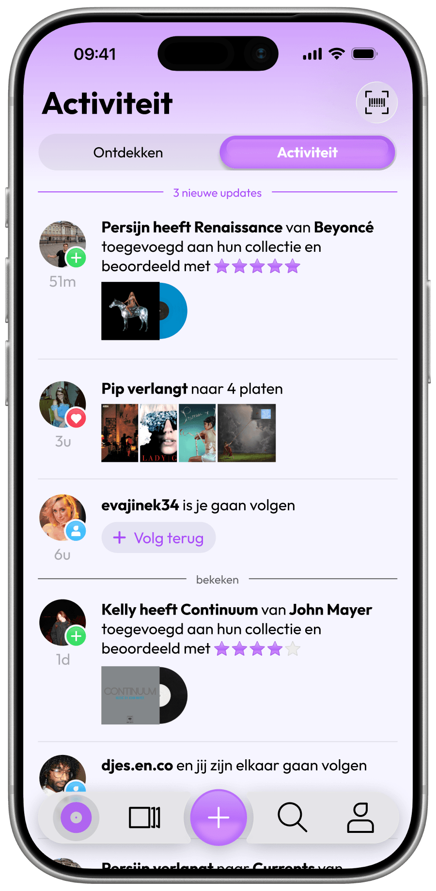
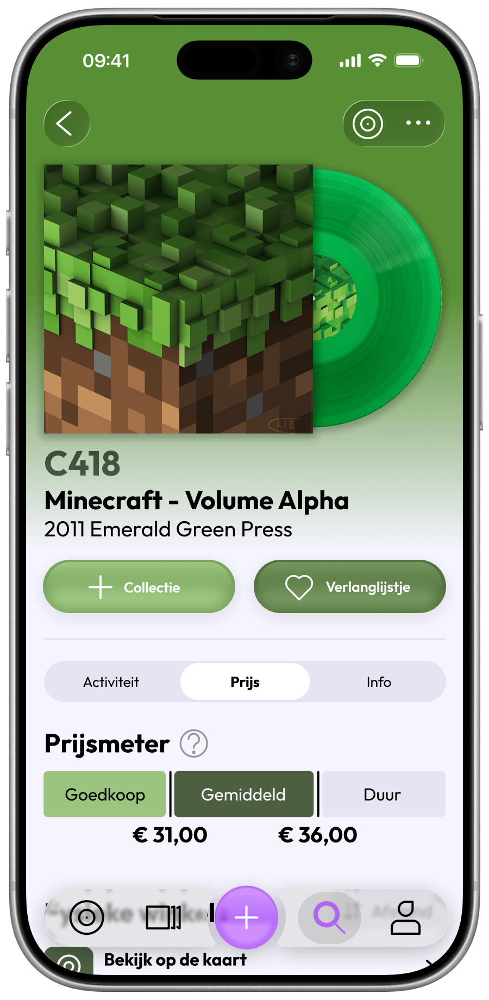
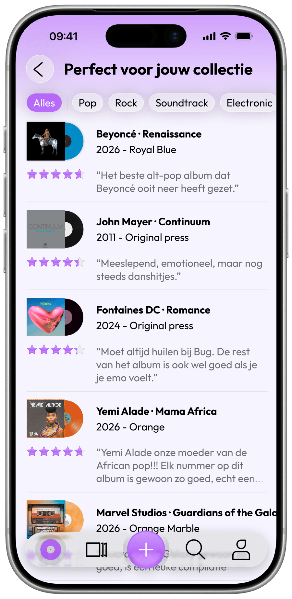
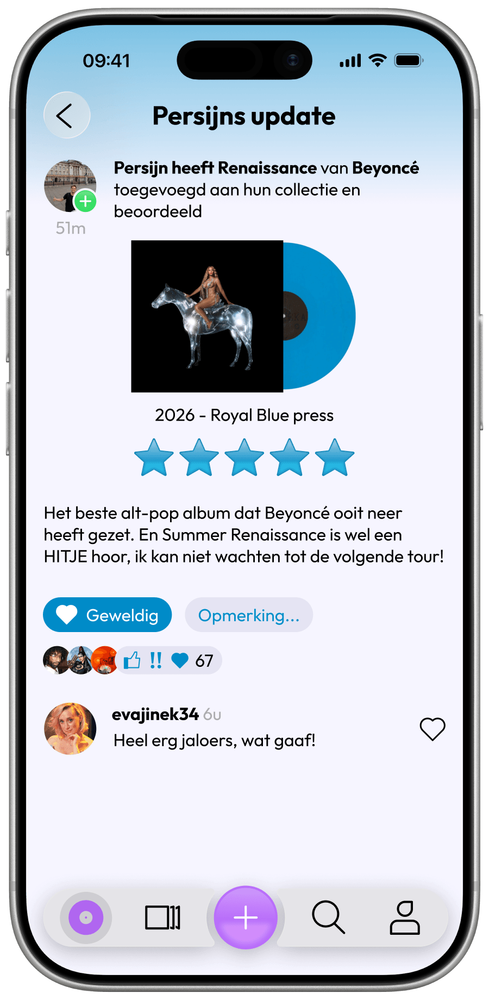
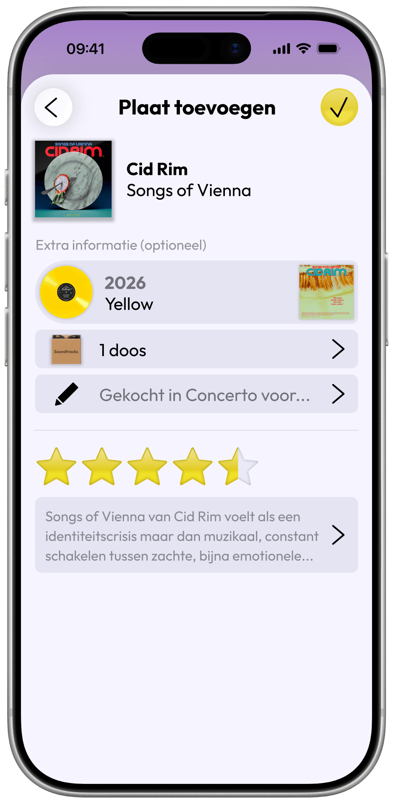
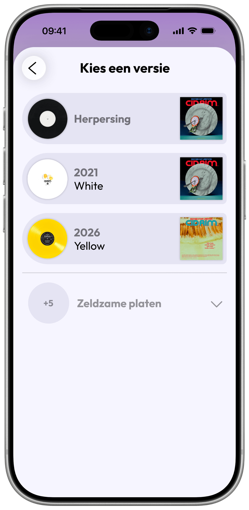

Trackstack
June 2026

The challenge
In the final semester of my Communication and Multimedia Design degree, I was challenged to apply everything I had learned by researching a self selected problem and designing a meaningful solution. For this, I created Trackstack.



The Problem
For this project, I drew on my passion for music and vinyl collecting to explore the frustrations experienced by record collectors. As collections grow, keeping track of every record becomes increasingly difficult. On top of that, with records being sold across countless online stores, local shops, and marketplaces, finding the best deal often requires a lot of time and effort.
The app
Trackstack is an app that addresses these challenges by offering practical tools for vinyl collectors. Users can manage their collection, compare purchase options for any record across different retailers, and receive personalised recommendations based on their listening habits, collection, and wishlist.
The style
For this app, I wanted to create a visual style that captures the nostalgic and personal feeling of playing a physical record. Through my research, I discovered that this emotional connection is one of the main motivations for people to collect records today. To achieve this, I combined elements of older skeuomorphic and aqua design styles with modern glass design. User testing showed that this visual direction successfully conveyed the nostalgic and special feeling associated with physical records.

Social platform
During interviews with the target audience, I discovered another important need: a social platform where collectors could share their opinions, collections, and wishlists. Based on this insight, I made social interaction a core part of the app. Users can rate and review albums in their collection, explore other collectors' profiles, and receive personalised recommendations based on the music their friends enjoy. This strengthens the social experience that has always been an important part of vinyl collecting.

Version selection
One of the biggest frustrations with other platforms collectors use to keep track of their records, is the difficult and unclear version selection. A lot of albums have a lot of different pressings, versions or editions, and it can become very difficult to know which exact version you have. During the interviews, I discovered that a strong majority of collectors don't care about which exact repress they've got. So to greatly simplify the selecting of a version, I grouped all identical looking represses under one option and laid out other versions in a clear way.


Explore the project
Go through the design rationale (in Dutch), click through the app, and watch the showcase!
Open the design rationaleThe result
During this project, I conducted thorough research, mapped user needs, explored concepts, and translated my findings into an app with a unique visual style. And I am happy to report that user testing showed that a strong majority of collectors would confidently use an app like this, validating the concept and design solution.
This project combines everything I learned at and outside of CMD, valuable expertise from Concerto & Plato owner Dick van Dijk, and insights gathered from everyone who participated in the interviews and user tests. With my personal passion for music and design at the centre of it all. I am incredibly proud of the result and hope to continue developing this concept into a functional product in the future.